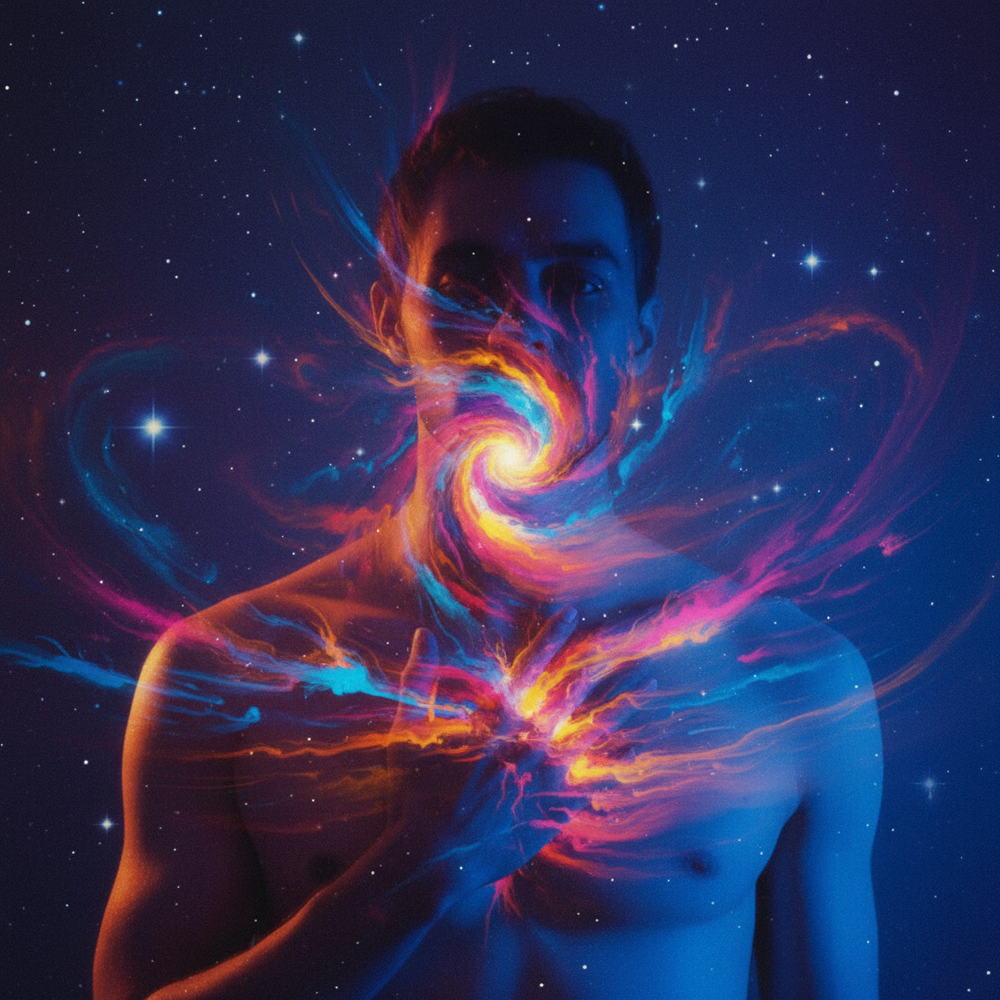

Galería de Arte · 2026
Human & Emotions
Una exploración de la abstraccion humana

Fotografía
Dissolution
Pintura Digital
Tensión Interna
Escultura
Masa Suspendida
Grabado
Líneas de Falla
Instalación
Ruido Blanco
Video Still
Ahora Continuo
✕